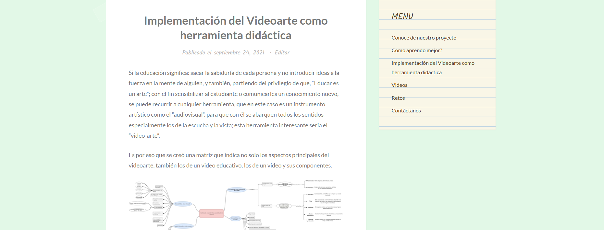
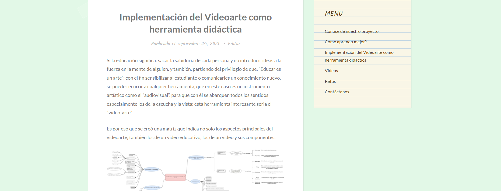

Sobre mí
Soy Claudia Susana Rodríguez Clavijo, Maestra en Arte con Concentración en Medios Electrónicos y Artes del Tiempo (M.E.A.T), Especialista y Magíster en Docencia Mediada por TIC.
Cuento con más de seis años de experiencia en docencia universitaria, diseño gráfico y desarrollo web, así como en la creación de contenidos digitales y proyectos educativos innovadores.
En este portafolio se destaca mi experiencia específica en la creación de sitios y páginas web y recursos multimedia, desarrollados para diversos públicos y objetivos. Cada proyecto refleja mi compromiso con la creatividad, la funcionalidad y la calidad estética, siempre orientada a generar experiencias significativas para el usuario.
Mi propósito es integrar diseño, tecnología y pedagogía para ofrecer soluciones digitales que comuniquen, inspiren y aporten valor.

- HTML5
- JavaScript
- WordPress
- Diseño UI/UX
- Adobe Photoshop
- Gestión de Contenido
Sitio Web GOCAR
- Estado: Activo
- Creación: 2011
- Última actualización: 2025
- Rol: Elaboración, Diseño y Administración de la Página Web.
- Contexto/Descripción Breve: Plataforma digital para la comunidad de Oficiales Carabineros GOCAR.
- Tecnologías utilizadas: HTML5, CSS3, JavaScript, WordPress...
Visuales del proyecto:


Blog: Video Arte y Estilos de Aprendizaje
- Estado: Activo
- Creación: 2021
- Última actualización: Sin actualizaciones posteriores
- Rol: Desarrollo del blog, Creación y Gestión de Contenido, Diseño de la Experiencia Didáctica.
- Contexto/Descripción Breve: Blog creado como herramienta de apoyo para una investigación de maestría, explorando la aplicación del videoarte para la didáctica y su relación con diferentes estilos de aprendizaje.
- Tecnologías utilizadas: WordPress (Backend basado en PHP), HTML, CSS, JavaScript (para personalizaciones).
Visuales del proyecto:
 

Blog: Creatividad y Lenguaje
- Estado: Activo
- Creación: 2023
- Última actualización: Sin actualizaciones posteriores
- Rol: Creación y Administración del Blog, Curación y Presentación de Trabajos Estudiantiles.
- Contexto/Descripción Breve: Plataforma digital para la exposición de trabajos realizados por estudiantes de Creatividad y Lenguaje de Comunicación Social.
- Tecnologías utilizadas: WordPress (Backend basado en PHP), HTML, CSS, JavaScript (para personalizaciones).
Visuales del proyecto:
Mi Portafolio Digital Personal
- Estado: Activo
- Creación: 2021
- Última actualización: Sin actualizaciones posteriores
- Rol: Diseño, Desarrollo y Administración de Sitio Web Profesional Personal para una de las clases de la maestría.
- Contexto/Descripción Breve: Cree mi propio espacio digital para exhibir los proyectos realizados y experiencias para la misma clase para la que fue creado.
- Tecnologías utilizadas: WordPress (Backend basado en PHP), HTML, CSS, JavaScript (para personalizaciones).
Visuales del proyecto:

Trabajo de Diseño: General Computer Development US – GCDUS
- Estado: Inactivo
- Creación: 2012
- Rol: Diseñadora Gráfica Web.
- Contexto/Descripción Breve: Creación de imágenes y elementos gráficos para la página web de General Computer Development US, un servicio de mantenimiento de computadoras e información.
- Tecnologías utilizadas: Adobe Photoshop.
Visuales del proyecto:


Pagina: Amigos de los Andes
- Estado: Inactivo
- Creación: 2001
- Rol: Diseño de una página interactiva que integre el material visual y textual de las entrevistas realizadas y desarrollo del proyecto.
- Contexto/Descripción Breve: Como parte de un proyecto social en colaboración con otro artista, se llevó a cabo un trabajo de campo con entrevistas a vendedores ambulantes autorizados que trabajaban en los alrededores de la Universidad de los Andes. El objetivo fue documentar y difundir sus experiencias y realidades cotidianas, presentando el contenido de forma accesible y visualmente atractiva a través de una página web interactiva.
- Tecnologías utilizadas: Adobe Flash para el desarrollo de la interfaz interactiva y animaciones, y HTML para la estructuración y publicación de las entrevistas.
Visuales del proyecto:

Página: Armonía Latina
- Estado: Inativo
- Creación: 2005
- Rol: Diseño y creacón de una experiencia digital para de convertir la esencia musical de un grupo en una presencia interactiva en línea.
- Contexto/Descripción Breve: Desarrollé la página web oficial de Armonía Latina, un grupo de músicos peruanos cuya propuesta fusionaba tradición y modernidad. El reto fue trasladar la calidez y ritmo de su música a un formato visual y dinámico. La interfaz fue creada en Adobe Flash, combinando animaciones fluidas con elementos visuales.
- Tecnologías utilizadas: Adobe Flash para el desarrollo de la experiencia interactiva y animaciones.
Visuales del proyecto:
Página: Especialistas del café
- Estado: Inativo
- Creación: 2006
- Rol: Diseño, desarrollo y encargada de crear una experiencia digital inmersiva que reflejaría la identidad y estilo de Especialistas del Café.
- Contexto/Descripción Breve: Desarrollé la página web de la empresa, junto con la colaboracion de un Ingeniero de Sistemas, esta empresa fue conformada por profesionales emprendedores amantes del café cuya sede principal está en Bogotá. La interfaz fue creada en Adobe Flash, combinando animaciones fluidas con elementos visuales.
- Tecnologías utilizadas: Adobe Flash para el desarrollo de la experiencia interactiva y animaciones.
Visuales del proyecto:
Página de COFIPOR
- Estado: Inativo
- Creación: 2007
- Rol: Diseño, desarrollo de la pagina web de la Cooperativa.
- Contexto/Descripción Breve: Desarrollé la página web de para la COPERATIVA. COFIPOR es una coperativa de aportes y crédito conformada por oficiales retirados de la policia nacional cuya sede principal está en Bogotá. La interfaz fue creada en lenguaje HTML, combinando elementos visuales.
- Tecnologías utilizadas: Dreamweaver y Photoshop.
Visuales del proyecto:
Página: Bambú
- Estado: Inactivo
- Creación: 2009
- Rol: Diseño y desarrollo web, encargada de crear una experiencia digital inmersiva que reflejaría la identidad y estilo del restaurante.
- Contexto/Descripción Breve: Diseñé y desarrollé la página web del restaurante Bambú, un restaurante de comida china que buscaba trasladar su atmósfera y tradición culinaria al entorno digital. La propuesta combinó una navegación fluida y elementos interactivos, transmitiendo la elegancia y calidez del lugar. Creada íntegramente en Adobe Flash, la web ofrecía animaciones sutiles, colores inspirados en el restaurante y una presentación visual que invitaba a explorar tanto el menú como la esencia del restaurante.
- Tecnologías utilizadas: Adobe Flash para el desarrollo de la experiencia interactiva, diseño de interfaz y animaciones.
Visuales del proyecto: